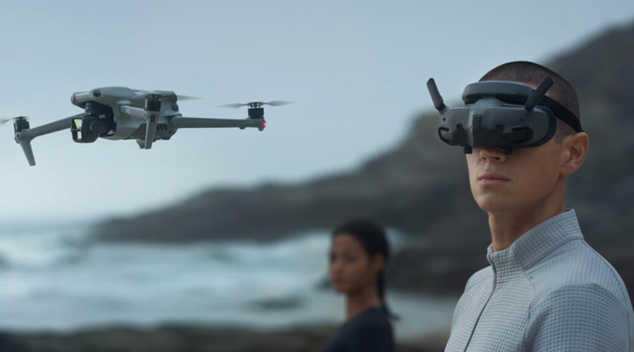

Ocean Hackathon · Octobre 2026
Vidéo stéréoscopique pour drone marin
Une chaîne vidéo immersive pour restituer les deux vues d’une caméra stéréo dans un casque VR.
Ma contribution & les technologies
Ma contribution
- Contribution à l’intégration d’une caméra stéréo USB et d’une Raspberry Pi 4 sous Linux, reliées au casque par le réseau Wi-Fi local.
- Mise en relation du flux JPEG/HTTP diffusé par µStreamer et de la page de visualisation hébergée avec Nginx.
- Intégration de l’affichage stéréoscopique et investigation des latences de transmission. Le pilotage du drone reste indépendant de la chaîne vidéo.
Technologies regroupées
- Système & matériel
- Linux, Raspberry Pi 4, caméra USB, casque VR
- Diffusion & interfaces
- µStreamer, Nginx, HTTP, Wi-Fi, HTML / JavaScript
- Intégration
- Acquisition vidéo, réseau local, visualisation stéréoscopique
